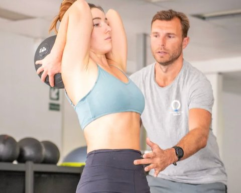
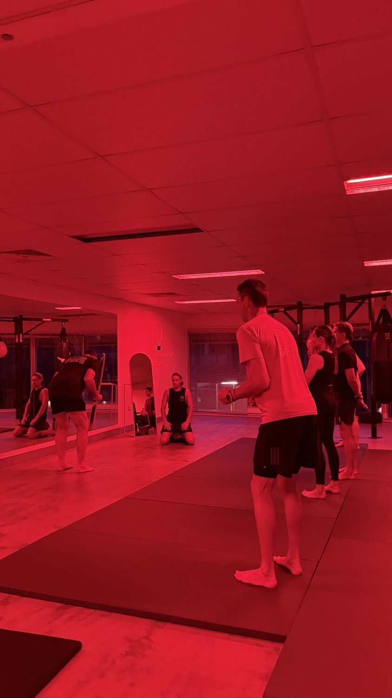

Progressive overload is one of the most repeated concepts in fitness.
You’ve probably heard it explained like this:
“If you want results, you need to keep adding more weight.”
While that idea sounds logical, it leaves out something critical — how the body adapts to load.
In Functional Patterns (FP), progressive overload isn’t rejected — it’s redefined.
Progressive Overload Meaning (The Traditional View)

The traditional progressive overload definition focuses on:
-
Increasing weight
-
Increasing reps
-
Increasing sets
-
Increasing intensity
The assumption is simple:
More load = more adaptation.
This works only if the body is organised well enough to handle that load.
And that’s where problems start.
Why Progressive Overload Often Leads to Pain
Many people follow progressive overload training perfectly — and still end up with:
-
Tight hips
-
Back pain
-
Shoulder discomfort
-
Movement compensations
Why?
Because load is being added to dysfunction.
If posture, coordination, or gait mechanics are off, progressive loading:
-
Reinforces asymmetry
-
Strengthens compensations
-
Increases joint stress instead of resilience
This is why people often feel “stronger but worse”.
Progressive Overload in Functional Patterns (FP Perspective)
In Functional Patterns, overload is not about how much weight you lift.
It’s about:
-
How well your body distributes force
-
How efficiently you manage gravity
-
How coordinated your movement is under load
Progression happens by improving:
-
Postural control
-
Core organisation
-
Hip and pelvis coordination
-
Load transfer during real movement (walking, hinging, reaching)
Only once these improve does external load actually become beneficial.
A Functional Progressive Overload Example
Traditional example:
-
Add 5kg to your squat every week
-
Push through “tightness”
-
Brace harder
FP-based example:
-
Improve pelvic control during standing
-
Reduce spinal compression during movement
-
Load patterns that mimic real-life force transfer
-
Progress complexity and coordination before weight
In FP, better movement is the overload.
Progressive Loading vs Progressive Compensation
Many people think they’re progressing because numbers go up.

But what’s often increasing is:
-
Spinal compression
-
Joint reliance
-
Muscle dominance patterns
This is progressive compensation, not progressive adaptation.
True progression should result in:
-
More ease of movement
-
Less tension
-
Better balance
-
Greater efficiency
If that’s not happening, load is being added too early.

Is Progressive Overload Good for Weight Loss?
This is a common question.
Progressive overload can support fat loss if:
-
Movement quality is high
-
The nervous system isn’t overloaded
-
Recovery improves alongside training
But when overload is applied without control, it often leads to:
-
Chronic stress
-
Inflammation
-
Reduced movement capacity
FP prioritises sustainable movement over short-term calorie burn.
Why “Progressive Overload Workout Plans” Miss the Mark
Most progressive overload workout plans focus on:
-
Sets and reps
-
Weight progression
-
Fatigue as a goal
What they rarely address:
-
How you stand
-
How you walk
-
How your core organises under gravity
Without these foundations, progression stalls — or pain appears.

How the Core & Mobility Series Applies Progressive Overload Correctly
The Core & Mobility Series uses progressive overload — just not in the traditional sense.
Progression happens through:
-
Improved core stability under movement
-
Increased mobility without compensation
-
Better glute and hip force transfer
-
Gradual exposure to load once coordination improves
Instead of chasing heavier weights, the program builds capacity that lasts.
This is why many people feel:
-
Stronger without stiffness
-
More stable without bracing
-
More capable in everyday movement
Final Takeaway
Progressive overload isn’t wrong — it’s just often applied too early and too aggressively.
In Functional Patterns, progression is earned through:
-
Movement quality
-
Coordination
-
Load management
When those improve, strength follows naturally — without breaking the body down.
👉 Learn more about the Core & Mobility Series and how FP approaches strength that actually carries over into real life.